So these are some innovations that i noticed while playing the game. I have only pulled off a few of the innovations in these but never fully in a run. others i havent, so I do NOT know if they are all possible, or if any are faster than the normal route. If any of you are able to proove that any of these innovations are not possible, or are deffinitely slower than the normal route, post here and i will delete them. 
EDIT: Fixed the radom blank space in all of the pictures.
So here they are:
*NOTE* for all of these drawings the black line is my innovated route, the blue dots are where you jump, and the red lines are an alternate innovated route by me, that could be faster or an easier but faster route if the black one fails. I also described what to do below each picture
24-3
Just some pretty crazy corner jumps here.
122-1
This one is getting to the "to the frame" perfection, but it is possible to do a quick 3 jump chimney with that corner there.
135-4
Get up to the key like normal with those two corner jumps, but when coming down jump of the first block up there then fall on to the corner of the last 2 block in the air to lose some speed then fall on the other corner there to propel youself to the door.
150-3
This innovation seems all most too impossible to me, but I think that it may work. Just jump down to where the gold is then wall jump and corner jump back out towards the starting spot then corner jump that block to get the key and get up to the other blocks. Now i doubt that you will have enough speed to do a reverse corner and get up to the door, so try just a third corner jump (yea i know three in a row O.o, but three has been done.) up to the block that the red line goes too, then do a wall jump or just any jump really to get back to the door.
172-3
Tripple jump the first curve there then head up and do a reverse jump of the curve and get to the key and fall.
184-3
Fall straight down on to that corner then jump off of it to the key and head up to the door like normal. *NOTE* the best jump I have done using that corner is that red dot near the mine. So I dont know if this is possible, It might not be.
66-4
I know its possible, and I am pretty sure that I have seen people do it before, but its not used in the speedruns, so some go take 0th by not wall jumping.
78-4
This Innovations works for both the speenrun and the highscore runs. Where the blue dots are you can just fall all the way down on to it and still use the slant to survive. If you need practice with it try my simple challege map #19 "Slanting It" (A little self promotion)
82-3
Ok this one its really strectching it. I am almost possitive that it cant be done, but I have seen stuff similar to it. Jump up towards the key and then chimney and hit the farthest pixel of the door to the right through the block. This requires so much speed to pull off, that I dont think its possible to get it from such a short chimney. But if anyone pulls it off it would save around 1000 frames off of current 0th
193-1
No pic really needed for this innovation. This innovation can be used on both the highscore and speedruns. Get the first 4 door keys from left to right (The order you get them in might not be left to right, its just those are the ones for the lower doors.) and then just chimney through the last door with out ever opening it. *NOTE* it is possible to chimney through the top two doors, but from what i can see you gain too much speed to that when you hit the celing you die.
195-2
The Picture is pretty self explanitory. Get the door key to the left of the lvl and then chimney through the door to save some time.
159-4
This innovation might be slower, but ill post it here anways. Drop down and get the key like normal then jump up on to the slant then on to the next one, and on the top slant run up the slant and hug the corner of it and you should glitch through the one way there, and then fall on to the bounce pad and jump off that wall on the way out and rocket to the exit.
107-3
Alright so in this innovation you have to use the glitch where you grab switches through doors. the blue and green lines are routes to get up high enough to glitch through the doors. the black line is the ideal route to get the exit key and then just leave. the red line is an alternative if its not possible to get the exit key because of the angle you have to hit the door at. if you follow the red path then go through the rest of the lvl as normal. Also ovbiously you can use these innovations for both speedrun and highscore runs.
32-1
OK, so i was going to accutally try and use my innovation because i pulled it off and it would have been a 0th run by like 200frames, but i screwed up the run in a few places. So I am just posting my innovation here. No image really needed just watch my demo in currently 2nd place. (I got the kryx chimney)
*NEW*
147-4
This innovation is pretty simple. get to the highest point you can quickly, then fall on that slant and tripple jump that spot and head all the way up to the wall right before the key. The ninja in the picture is the highest I could get with a few minutes of practice, but there are prolly people that can do it better than I can.
Well thats all folks. If I come up with some more I will post them here. Good Luck and happy 0thing.
EDIT: Fixed the radom blank space in all of the pictures.
So here they are:
*NOTE* for all of these drawings the black line is my innovated route, the blue dots are where you jump, and the red lines are an alternate innovated route by me, that could be faster or an easier but faster route if the black one fails. I also described what to do below each picture
24-3
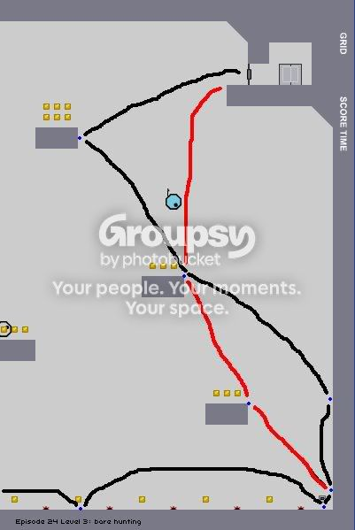
Just some pretty crazy corner jumps here.
122-1
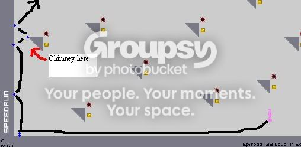
This one is getting to the "to the frame" perfection, but it is possible to do a quick 3 jump chimney with that corner there.
135-4
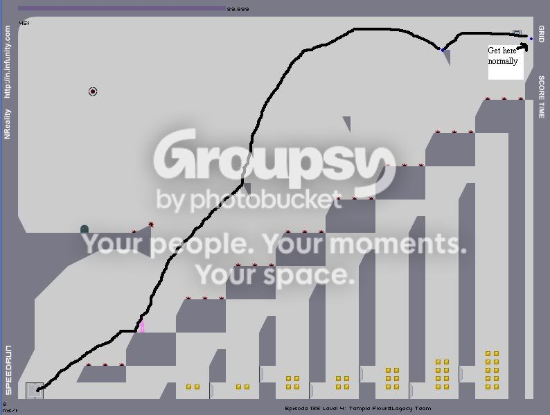
Get up to the key like normal with those two corner jumps, but when coming down jump of the first block up there then fall on to the corner of the last 2 block in the air to lose some speed then fall on the other corner there to propel youself to the door.
150-3
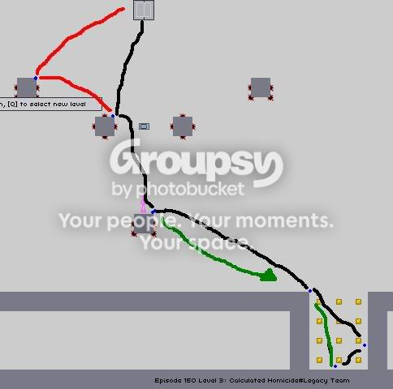
This innovation seems all most too impossible to me, but I think that it may work. Just jump down to where the gold is then wall jump and corner jump back out towards the starting spot then corner jump that block to get the key and get up to the other blocks. Now i doubt that you will have enough speed to do a reverse corner and get up to the door, so try just a third corner jump (yea i know three in a row O.o, but three has been done.) up to the block that the red line goes too, then do a wall jump or just any jump really to get back to the door.
172-3
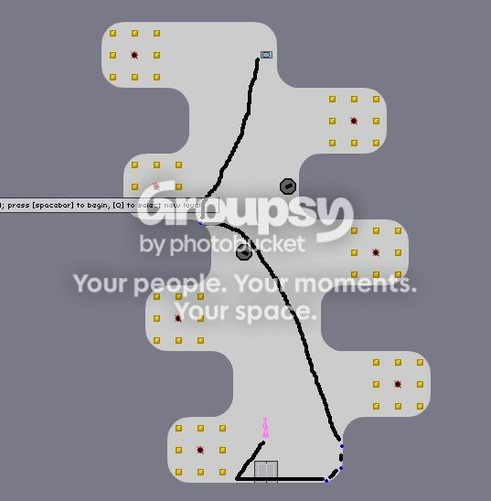
Tripple jump the first curve there then head up and do a reverse jump of the curve and get to the key and fall.
184-3
Fall straight down on to that corner then jump off of it to the key and head up to the door like normal. *NOTE* the best jump I have done using that corner is that red dot near the mine. So I dont know if this is possible, It might not be.
66-4
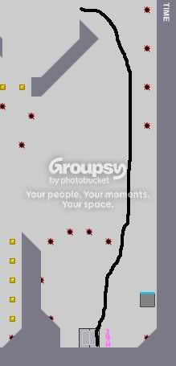
I know its possible, and I am pretty sure that I have seen people do it before, but its not used in the speedruns, so some go take 0th by not wall jumping.
78-4
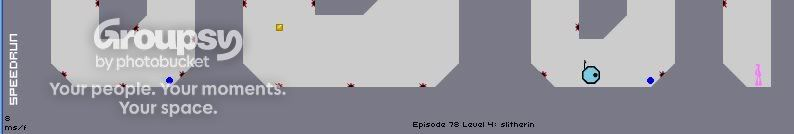
This Innovations works for both the speenrun and the highscore runs. Where the blue dots are you can just fall all the way down on to it and still use the slant to survive. If you need practice with it try my simple challege map #19 "Slanting It" (A little self promotion
)82-3
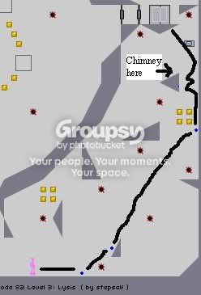
Ok this one its really strectching it. I am almost possitive that it cant be done, but I have seen stuff similar to it. Jump up towards the key and then chimney and hit the farthest pixel of the door to the right through the block. This requires so much speed to pull off, that I dont think its possible to get it from such a short chimney. But if anyone pulls it off it would save around 1000 frames off of current 0th
193-1
No pic really needed for this innovation. This innovation can be used on both the highscore and speedruns. Get the first 4 door keys from left to right (The order you get them in might not be left to right, its just those are the ones for the lower doors.) and then just chimney through the last door with out ever opening it. *NOTE* it is possible to chimney through the top two doors, but from what i can see you gain too much speed to that when you hit the celing you die.
195-2
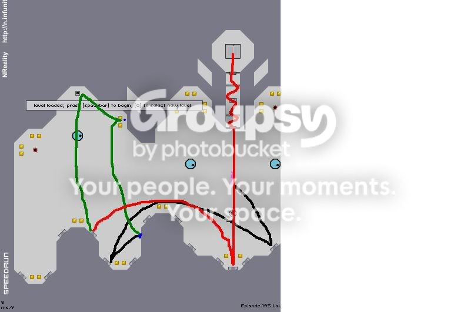
The Picture is pretty self explanitory. Get the door key to the left of the lvl and then chimney through the door to save some time.
159-4
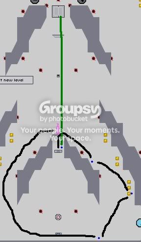
This innovation might be slower, but ill post it here anways. Drop down and get the key like normal then jump up on to the slant then on to the next one, and on the top slant run up the slant and hug the corner of it and you should glitch through the one way there, and then fall on to the bounce pad and jump off that wall on the way out and rocket to the exit.
107-3
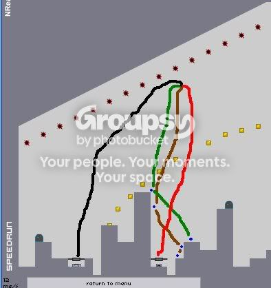
Alright so in this innovation you have to use the glitch where you grab switches through doors. the blue and green lines are routes to get up high enough to glitch through the doors. the black line is the ideal route to get the exit key and then just leave. the red line is an alternative if its not possible to get the exit key because of the angle you have to hit the door at. if you follow the red path then go through the rest of the lvl as normal. Also ovbiously you can use these innovations for both speedrun and highscore runs.
32-1
OK, so i was going to accutally try and use my innovation because i pulled it off and it would have been a 0th run by like 200frames, but i screwed up the run in a few places. So I am just posting my innovation here. No image really needed just watch my demo in currently 2nd place. (I got the kryx chimney
)*NEW*
147-4
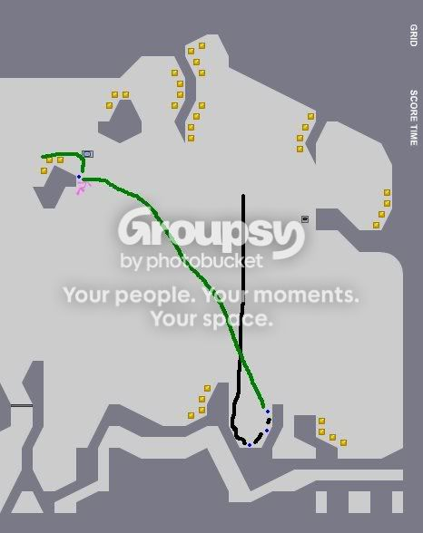
This innovation is pretty simple. get to the highest point you can quickly, then fall on that slant and tripple jump that spot and head all the way up to the wall right before the key. The ninja in the picture is the highest I could get with a few minutes of practice, but there are prolly people that can do it better than I can.
Well thats all folks. If I come up with some more I will post them here. Good Luck and happy 0thing.
 ) and I know it's fastest when you jump from the switch to the second block, run and hit the corner of the bottom block like you did
) and I know it's fastest when you jump from the switch to the second block, run and hit the corner of the bottom block like you did

 I was talking about my 66-4 in my edit... 82-3 is certainly impossible.
I was talking about my 66-4 in my edit... 82-3 is certainly impossible.